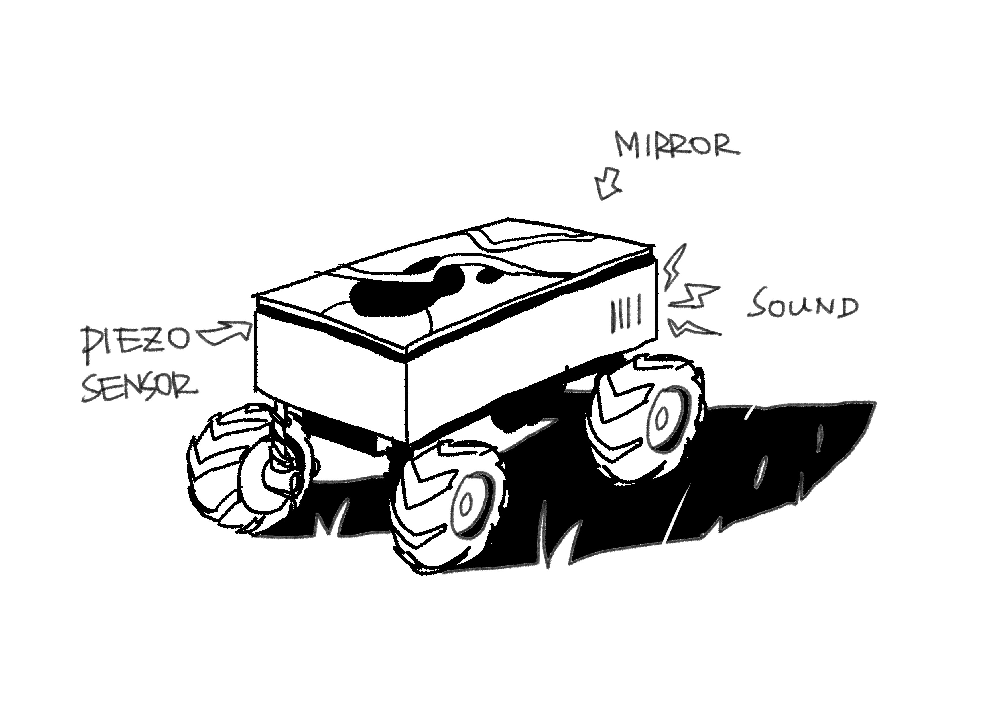

Midterm Proposal
Yufei Zhang & Sonia Zhang
We are both interested in creating some kind of communication and dialogue with animals, and we share a general fascination with birds. Among the animals that are likely to appear as the urban wild, we settled on crows and ravens, not only associated with a rich range of mystic qualities in human nature, but also known as being extremely smart, bold and playful, whose behaviours continue to impress us and push the human understanding of animal mind.
From a brief scan on the internet, we learnt that an abundance of evidence that they like to interact with other animals, such as playing with a lion’s tail, pecking cats’ back, and jumping around a cat fight. It is also evident that crows feel comfortable with using man-made objects, such as using bridges, cell towers and surveillance cameras as a structure for nest building. These suggest that crows have a rich affordance to interact with a multitude of objects, and they might be less prone to intimidation by technological intervention. Therefore we think they are an ideal species to attempt communicating and playing with.
We found a video footage of a crow interacting with food object in a woodland, and made our AEIOU table and behavioral map:
After this and having looked at more videos and articles, we started to draw our Brainstorming Tree, setting “communication” and “play” as our central themes, “fight” being a side-idea after being impressed by a video of crow fights:

Here are the features we decide to retain in our product:
Here are the two proposals we came up:
-
Jumping object: there would be an object moving cyclically on the ground. In order to attract attention and interaction from the crow, we introduce mirrors on the surface as a rare, shiny object that tends to make crows curious, which fits into their character as being bold and playful. We will also include a small microphone playing crow’s walking sound, so that the attraction to crows are not only visual but also auditory. The object will react to the crow’s pecking, which seems to be their central behaviour for exploratory acts. Once the crow pecks the object, it will stop and jump up in the air, then return to the cyclical movement. The direction of jumping changes depending on the angle in which the object is pecked by the crow.
 -
Moving Tail: This is inspired by the fact that when crows play with other animal species, they tend to peck their moving tails. We would build a stationary artifact with an oscillating tail-like structure. To attract crows this time, we play a sound of animal call, or crow call. Every time the crow pecks the tail-like structure, it will change its call, the direction of oscillation, and frequency of oscillation for up to 5 seconds, then return to its usual pattern.